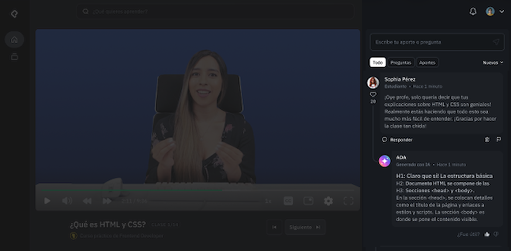
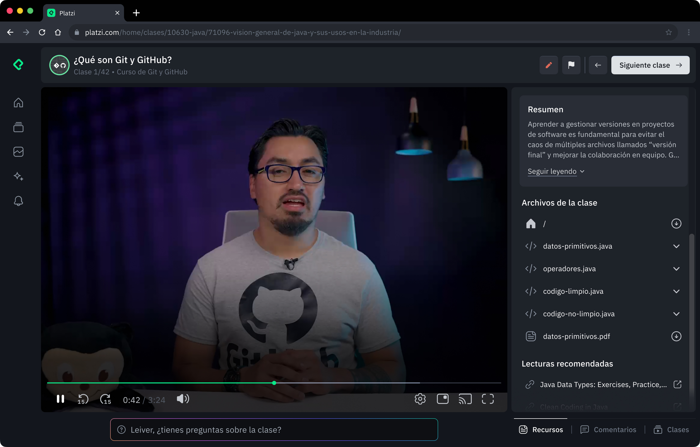
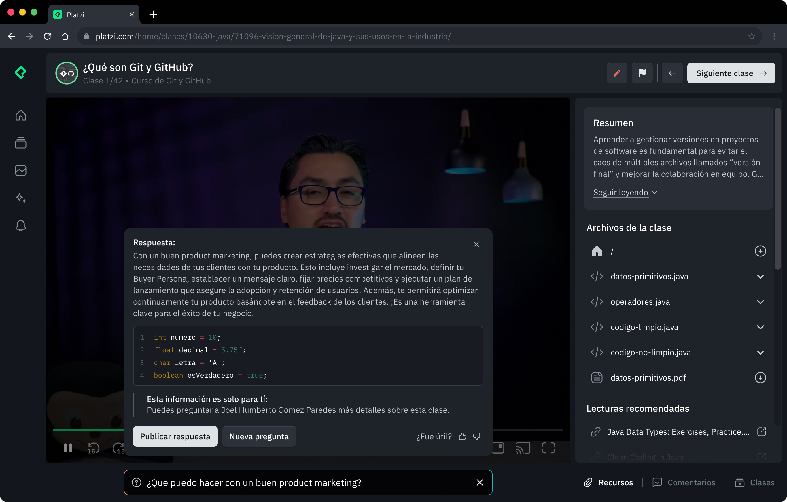

Instant student support
An AI assistant giving immediate answers to student questions inside the learning interface, improving course completion by 10%.
Impact
Help at the moment of confusion
Instant support drove significant gains in course completion and feature adoption.
+10%Course completion rate
25K+Students using the feature
200K+Questions answered by AI
01 — Problem
Unanswered questions blocking progress
90%
of student questions in class discussions went unanswered, creating barriers to understanding and driving course abandonment.
ANo immediate helpStudents stuck on a concept had nowhere to get a quick answer, and disengaged when they couldn’t move on.
BCommunity couldn’t scalePeer-to-peer help in discussions wasn’t providing the support students needed to succeed.
CAbandonment at confusion pointsUnanswered questions correlated directly with lower completion rates.
02 — Solution evolution
From community bot to instant assistant
We built two versions, learning from each to balance community engagement with immediate support.


03 — How it works
Context-aware answers in seconds
Student question+Lesson content+Course context Both versions use the same prompt system, with a fast model so responses appear within seconds. In V2, students can post an AI answer to the discussion, preserving community knowledge while making immediate help the priority.
04 — Key learnings
What I learned building this
01
Solve the real problem first
V1 tried to preserve an idealized community dynamic that didn’t match actual behavior. V2 focused on what students needed: immediate help when stuck.
02
Speed over perfection
Instant answers kept students moving. Waiting for perfect community responses that never came was worse.
03
Design for actual usage
Students weren’t using discussions to ask questions. Putting help inside the learning interface met them where they already were.